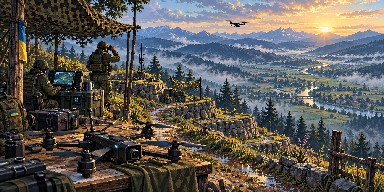
The Hillside Flight Workshop
fpv · terrace-stitch · 1774×887 original
Source artwork for three layout cues across four themes. Review thumbnails preserve the whole frame; select an image to inspect its untouched original. No runtime, collision-map or production approval is implied.
Replacement and verification guide · Full provenance and deviations

fpv · terrace-stitch · 1774×887 original
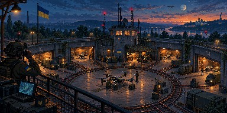
fpv · survey-wheel · 1774×887 original
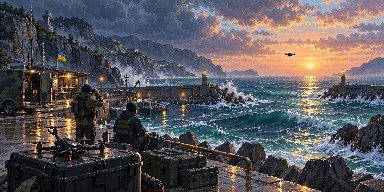
fpv · breakwater-return · 1774×887 original
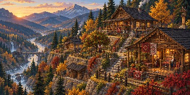
ukraine · terrace-stitch · 1774×887 original
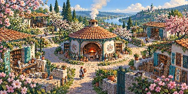
ukraine · survey-wheel · 1773×887 original
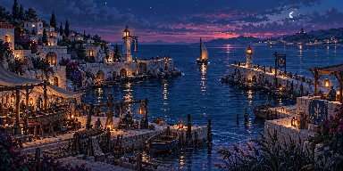
ukraine · breakwater-return · 1774×887 original
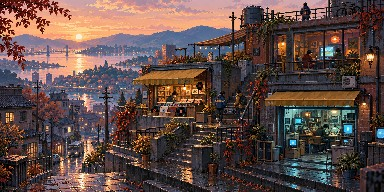
retro · terrace-stitch · 1774×887 original
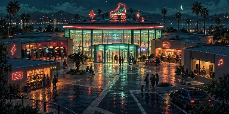
retro · survey-wheel · 1774×887 original
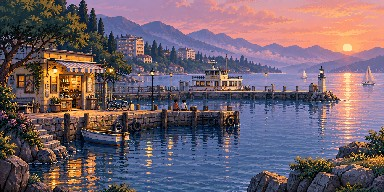
retro · breakwater-return · 1774×887 original
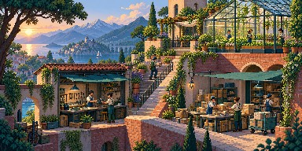
coupa · terrace-stitch · 1774×887 original
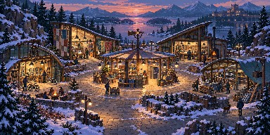
coupa · survey-wheel · 1774×887 original
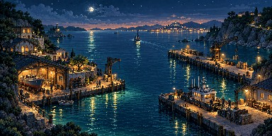
coupa · breakwater-return · 1774×887 original